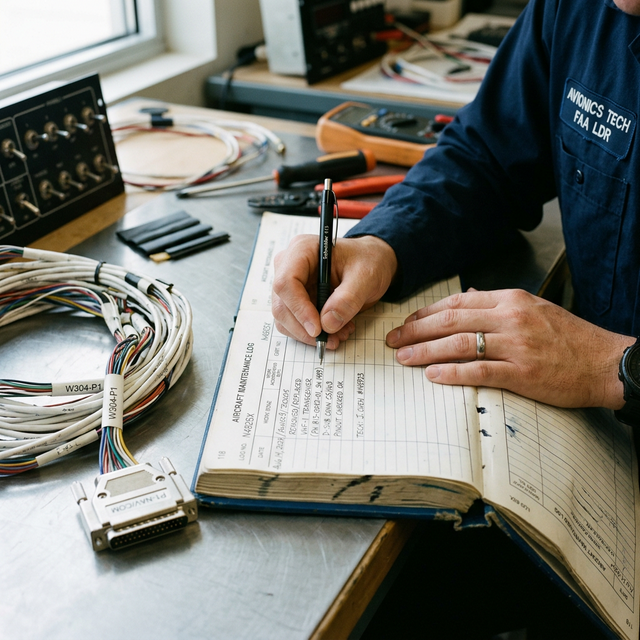

Maintenance record elements
Part 43.9 level
Module Objectives
- Identify the six mandatory elements required in a general maintenance record entry under 14 CFR §43.9.
- Differentiate between a compliant work description and an unacceptably vague one.
- Draft a compliant Part 43.9 maintenance record entry for a simulated avionics repair.
Why Does This Matter?

You just completed a transponder repair — the internal power supply was rebuilt, the unit tested perfectly on the bench, and it is ready to ship back. But if your paperwork is incomplete, the work is legally non-existent. In aviation maintenance, the work is not complete until the record is complete. An aircraft is grounded if its maintenance records are incomplete, no matter how flawlessly the physical repair was executed.
What You Need To Know
14 CFR §43.9 is the regulation that specifies exactly what must be included in every general maintenance record entry. There is no flexibility here — all elements are unconditionally required.
The Six Required Elements (§43.9)
Every single maintenance record entry must include:
- 1. Description of work performed — A clear, specific account of what was done.
- *Bad:* "Repaired transponder." - *Good:* "Replaced internal power supply module PN 123-45 per CMM Rev 7 Section 4. Unit passed full functional test."
- 2. Parts used — Part numbers and quantities of any components installed.
- 3. Date completed — The date the maintenance was finished and signed off, NOT the date work started.
- 4. Technician name — The printed full name of the person who holds the authorization.
- 5. Certificate number — The technician's FAA airman certificate number (or the repair station certificate number if signing under the shop's authority).
- 6. Return-to-Service Statement / Signature — A declarative statement that the work was performed satisfactorily, followed by the physical signature of the authorized person.
Common Documentation Failures
Most FAA paperwork violations stem from lazy documentation:
- Omitting the specific part numbers of installed hardware.
- Recording the work order creation date instead of the completion date.
- Using a work order number in place of the required individual elements.
- Writing vague, useless descriptions ("checked and OK'd", "fixed wire").
- Forgetting the actual physical signature.
What Is NOT Required by §43.9
The following are often included by company policy, but are NOT mandated by the FARs:
- Aircraft serial number or tail number (unless signing an actual aircraft logbook instead of a yellow tag/8130-3).
- Work order number (this is an internal administrative tool).
- IA (Inspection Authorization) countersignature (this is only required for major repairs and major alterations, not general maintenance).
System Visualization
graph TD
A[Physical Repair Complete] --> B[Draft Maintenance Record Entry]
B --> C{1. Detailed Description?}
C -- Yes --> D{2. Parts/Materials Listed?}
D -- Yes --> E{3. Completion Date?}
E -- Yes --> F{4. Printed Name?}
F -- Yes --> G{5. Certificate Number?}
G -- Yes --> H{6. RTS Statement & Signature?}
H -- Yes --> I[Legal Record. Return to Service Authorized.]
H -- No --> J[Incomplete Record. Do Not Release Component.]
C -- No --> J
style I fill:#166534,stroke:#14532d,stroke-width:2px,color:#fff
style J fill:#991b1b,stroke:#7f1d1d,stroke-width:2px,color:#fff
On The Job
When you complete a repair and sit down to write the record, mentally check off all six elements: description, parts, date, name, certificate number, return-to-service signature. Be verbose. Assume the person reading the logbook entry in 5 years needs to know exactly what book you used and what you replaced. If any one element is missing, the record is incomplete and the work cannot be released.
Reference Terms
Maintenance Record (§43.9)
Per 14 CFR §43.9, a maintenance record must include: description of work performed, date completed, name of person performing work, certificate number, and a return-to-service signature.
Avionics Repair Log Entry (Required Elements)
Required elements per §43.9: description of work performed, parts used, date completed, technician name, certificate number, and return-to-service statement.
14 CFR §43.9
The specific FAR section governing the content requirements for general maintenance records.
Return-to-Service Signature
The final signature by an authorized person declaring the maintenance was completed satisfactorily per approved data.
Description of Work Performed
A specific, detailed, traceable account of the maintenance actions taken.
Assessment Check
Every maintenance record must include six specific elements: description of work, parts used, date completed, printed name, certificate number, and signature — if one is missing, the aircraft is grounded. --- ---